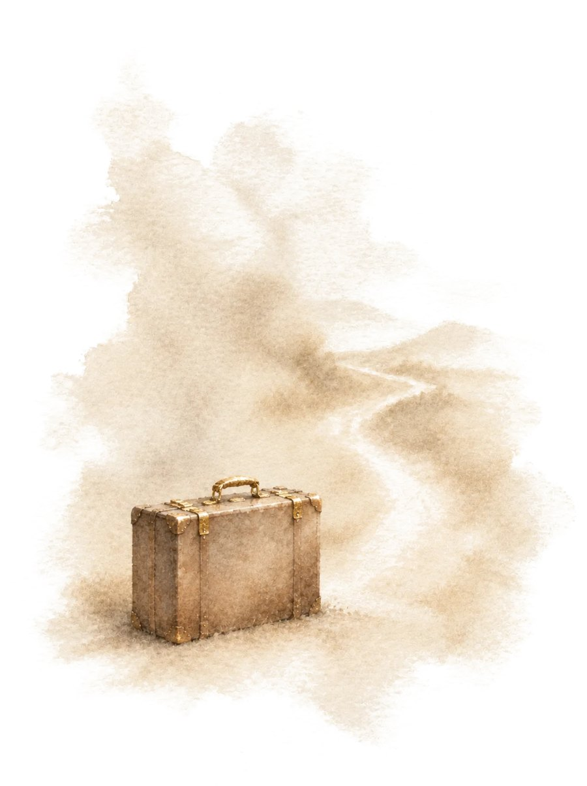

Коуч ICF в Швейцарии и психолог в Украине. Подробнее обо мне и о том, как я работаю →
Что я умею, что привезла с собой и что из этого достать первым

После переезда кажется, что всё, что ты умела, осталось там. А ты привезла с собой целый багаж: профессию, опыт, навыки из жизни, языки, людей и характер. Часть его работает уже сейчас, а часть лежит на дне чемодана и ждёт, когда ты её достанешь. Этот лист поможет открыть чемодан по отделениям, увидеть свои козыри и выбрать, что достать первым. Одним маленьким шагом.
Кажется, что здесь ты начинаешь с нуля и твой опыт никому не нужен. Непонятно, на что опереться в работе, в деле или в паре.
Опись твоего багажа на одном листе: что уже работает, что лежит без дела и где это может пригодиться, твои козыри, что мешает их достать и что для этого нужно. Одно отделение, с которого можно начать, и маленький шаг на эту неделю.
С нуля не начинает никто. Ты начинаешь с новой точки, но со всем, что умеешь и чем стала. Багаж не нужно собирать заново — его нужно открыть.
Твои ответы остаются только у тебя, на этом устройстве. Я их не вижу.
Отметь до трёх из того, что ты нашла в чемодане.
Отметь до трёх мыслей, которые звучат в тебе чаще всего.
Отметь до трёх вещей, которых сейчас не хватает больше всего.
В файле опись твоего багажа, твои козыри, что поможет их достать, разбор отделения, с которого ты начинаешь, и маленький шаг. В конце — бланк, чтобы четыре недели отмечать от руки, что ты достала из чемодана.
Удалить все ответы и все листы с этого устройства? Если хочешь их сохранить, сначала скачай PDF или резервную копию.